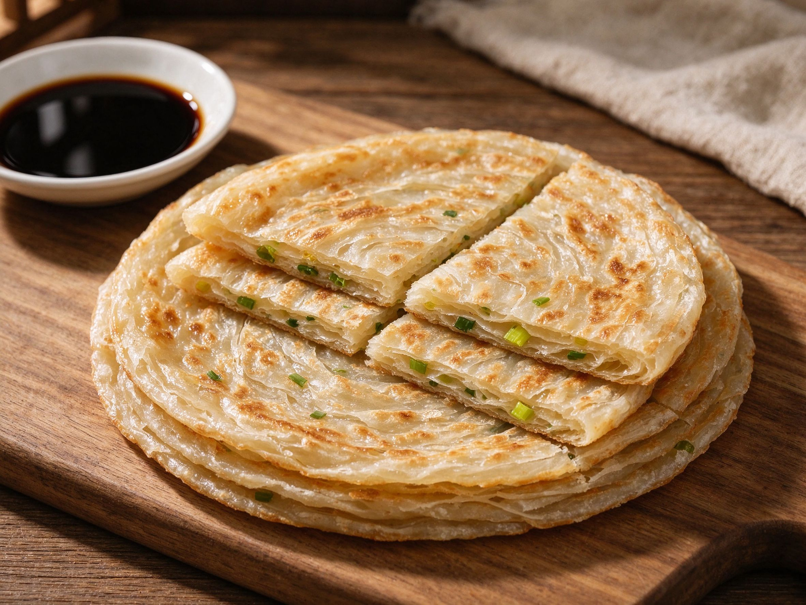

Cong You Bing: Chinese Scallion Pancakes With Real Layers
A good scallion pancake is not a flatbread with green bits in it. It's a stack of thin sheets of dough folded onto each other, each smeared with scallion oil, so that when the thing hits hot oil the steam between the sheets pushes them apart. That's where the flake comes from — and it's entirely a shaping problem, not a recipe problem.
What Goes Wrong, and Why
- It comes out hard and cracker-like. The dough was too dry or made with cold water only. Scallion pancakes need boiling-hot water to partly cook the flour.
- It comes out bready and flat. No oil roux between layers. Without fat, the layers fuse back together into one slab.
- It burns outside, raw flour taste inside. Pan too hot, pancake too thick. Medium heat, thinner discs, more time.
- Layers break off at the edges. Too little rest before rolling, or the dough was overworked and fought back.
Ingredients (makes 4 pancakes)
- Dough: 300 g plain flour, 1/2 tsp salt, 180–190 ml just-boiled water (about 90 °C)
- Oil roux: 3 tbsp neutral oil, 2 tbsp plain flour, 1/2 tsp salt — stirred into a thick paste
- Fill: 4–5 scallions, both white and green, sliced thin, roughly 3/4 cup total
- To cook: 4–6 tbsp neutral oil, coarse salt for finishing
Method
- Make the hot-water dough. Mix flour and salt, pour the hot water in while stirring with chopsticks until it forms shaggy clumps. Let it sit 5 minutes to cool, then knead 4–5 minutes to a smooth, soft, slightly tacky ball. It should feel softer than bread dough, closer to earlobe. Cover and rest 30 minutes — this rest is non-negotiable, the gluten needs to relax.
- Mix the oil roux. Stir oil, flour and salt into a paste the consistency of thick cream. This is the layer separator; without it nothing flakes.
- Roll, smear, scatter. Divide dough into 4. On a lightly oiled bench (flour makes it slip and dry out), roll each piece into a thin oval roughly 20 x 30 cm. Spread a quarter of the roux across it, leaving a 2 cm border, then scatter a quarter of the scallions evenly — right to the edges, no dense clump in the middle.
- Roll up and coil. Roll the oval into a long cylinder from the short side, then coil the cylinder into a snail spiral, tucking the end under. Press it flat with your palm.
- Rest, then roll out. Let the coil rest 10 minutes, then roll gently into a disc 18–20 cm across, about 6 mm thick. Don't force it — if the dough resists or the edge starts splitting, wait 5 more minutes.
- Fry in a generous pan of oil. Hot pan, 1–1.5 tbsp oil per pancake, medium heat. Lay it in, cook 2–3 minutes until the underside is deep golden and blistered, flip, and cook 2 minutes more. Part-way through the first side, press and rotate the pancake with a spatula — that smash is what separates the layers.
- Drain and repeat. Blot on paper, sprinkle with coarse salt, cut into six wedges and serve immediately while the layers are still crisp.
Serving
Eat them hot, cut in wedges, with nothing more than a dipping sauce: equal parts black vinegar and light soy, a teaspoon of chili oil, a grated garlic clove. They're also the right carb for a bowl of congee, or for wrapping braised pork with scallion and cucumber.
Freezing and Reheating
Roll out the discs, layer them between sheets of parchment, bag them, and freeze flat. Cook from frozen — no thawing — adding one extra minute per side. This is worth doing: shaping four pancakes is barely more work than shaping twelve, and the freezer version beats anything from a packet.
Variations
- Extra flaky: add 1 tbsp toasted sesame oil to the roux and a spoon of toasted sesame seeds to the fill.
- Savory-strong: a pinch of five-spice and a tablespoon of finely chopped dried shrimp in the roux.
- Egg-wrapped: crack an egg over the pancake in the pan, spread it, flip so the egg sets against the crust — the Taiwanese breakfast version.
Once you can make a layered pancake, the same dough handles dumpling wrappers rolled thin, and the same hot-water logic shows up in soup dumplings.